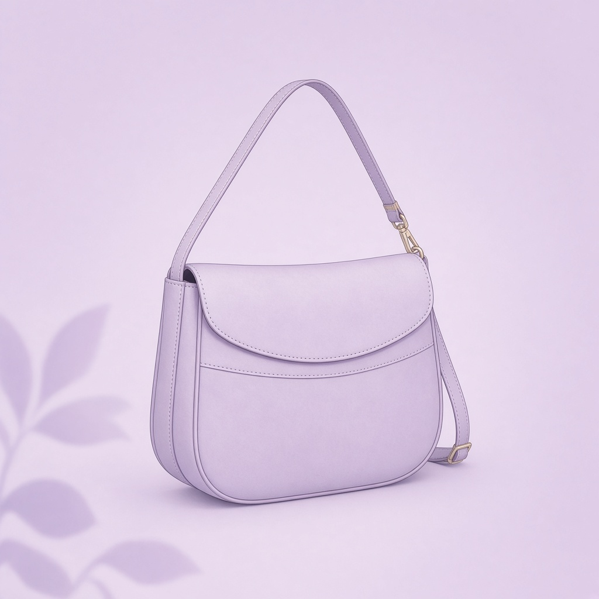

Gambar: ilustrasi, bukan foto produk asli.
TasUlasan: KENZY Sling Bag Wanita Elegan
Situs ini memuat link afiliasi Shopee; kami bisa mendapat komisi tanpa biaya tambahan untukmu.
| Harga | Rp13.900 |
| Rating | ★ 4.6 / 5 |
| Terjual | 10RB+ |
Data per 25 Okt 2026, bisa berubah. Cek halaman Shopee untuk info terbaru.
Ringkasan
Sling bag wanita model elegan dari KENZY, sekitar Rp13.900. Terjual 10RB+ dengan rating 4,6.
Cocok untuk
- Yang butuh tas kecil untuk HP, dompet, dan kunci
- Jalan santai atau hangout
Kelebihan
- Harga sangat terjangkau
- Model sling praktis
- Banyak pembeli (10RB+)
Perlu diperhatikan
- Di harga ini, kualitas bahan dan jahitan perlu dicek di ulasan
- Ukuran kecil, tidak muat barang besar
Ulasan ini berdasarkan data produk dan rating pembeli, bukan pengalaman pemakaian pribadi.
Beli di ShopeeCerita singkat (fiksi)
Sling bag itu punya satu cita-cita: menemukan kunci yang selalu hilang. Ia membuat kantong khusus, menaruh kunci di sana, dan berteriak dalam hati setiap pemiliknya panik. "Di saku depan! Saku depan!" Suatu hari pemiliknya akhirnya mengecek saku depan. Tas itu menangis bahagia.